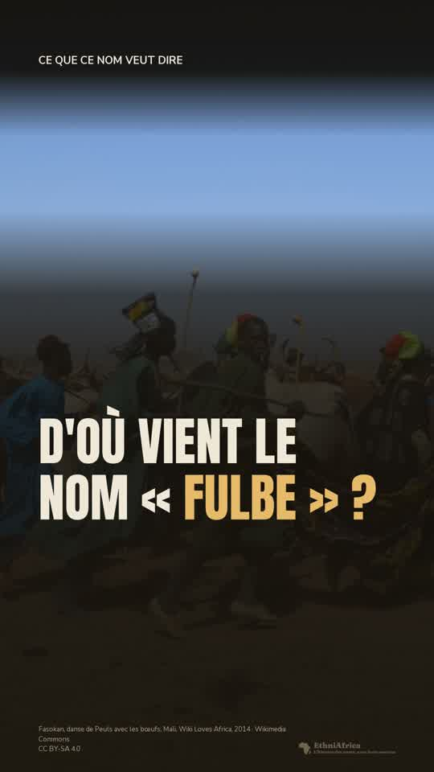

EthniAfrica · ethniafrica.com/fr · v5.2.0 · relevé du 14 octobre 2026
Valeurs déclarées dans src/styles (color, type, space, radius, elevation, motion) et composants tels qu'ils apparaissent sur les pages en production. Thème jour seulement.
--afh-bg
#fbf7f2
--afh-bg-warm
#f5ede0
--afh-surface
#ffffff
--afh-border
#e8dfd3
--afh-text
#2c2018
--afh-text-soft
#746557
--afh-text-muted
#9b8b7d
--accent-foreground
#1a1208
Ocre
L'atlas · pays · peuples · noms
#c9821f
#f1d9ae
#835514
Teal
Les dossiers
#33a390
#cbe7df
#226d60
Terre
Familles · marqueur d'exonyme imposé
#c4573f
#f0d2c8
#974331
Pervenche
Jouer · langues
#7a8ce8
#dce1f9
#535f9e
conf-high · contemporain
#2b6b42 sur #e8f5ed
conf-high-bg
#e8f5ed
gold · précolonial
#7a5a00 sur #fdf5e1
conf-mid · amber
#d4a843
colonial-ink · colonial
#9b3030 sur #fce8e8
terracotta · focus · figure
#b64e27 sur #fceee8
earth · conf-low-ink
#7e603e sur #f3ebe0
clay · conf-low
#b87d5b
azure · source secondaire
#5b8db8 sur #e6f0f7
error (réservé)
#9b3030 · #fce8e8 · #e5b8b8
name-birth-bg
#fbe9dc
name-birth-ink
#8a3d1c
name-birth-chip
#f6d3bd
name-before-dash
#7d6c5c
brand-flame
#da622f
brand-gold
#f2ba36
gradient-brand
135°, flame vers gold
oral
#b1721b
book
#2c8e7d
encyclopedia
#a3488a
press
#c4573f
report
#6277e4
archive
#7e603e
other
#5b6b7b
hero · Fraunces 900 · 34 à 52 · 1.05
Fulɓe
h1 · Fraunces 900 · 27 à 40 · 1.1
Peul
h2 · Fraunces 700 · 22 à 30 · 1.2
Noms de personnes rattachés à ce peuple
h3 · Fraunces 700 · 19 à 23 · 1.3
Nom de clan
lead · Nunito Sans · 19 à 22 · 1.45
Bande sahelienne de l'Atlantique au Tchad
body · Nunito Sans · 17 à 19 · 1.65
Le nom Peul désigne un peuple qui se nomme lui-même Fulɓe, et Pullo pour une seule personne.
small · 16 fixe · 1.5
Forme courante en français, aussi écrite Peulh ou Peuhl.
caption · 13 fixe · 1.45
Personnes citées dans ce récit : Amadou Hampâté Bâ
eyebrow · 12 · 600 · 0.16em · capitales
Aller plus loin
mono · JetBrains Mono · clés, périodes, libellés
PPL_FULA · FLG_BANTU · 40 000 000
Rampe
4
8
12
16
24
32
48
64
96
Gouttière de page 12 · 24 · 32 (430, 768, 1200). Carte 18 · 24 · 32. Écart de section 24 · 32 · 48.
Rayon
0 · source
4 · tuile
12 · carte
14 · action
full · valeur
elev-1
elev-2 · plaque héro
elev-3 · retour en haut
elev-4
elev-5
elev-warm
Mouvement : 120 ms survol, 200 ms couleur et bordure, 320 ms panneau, 400 et 600 ms fondu. Ressort cubic-bezier(.22, 1, .36, 1) réservé aux arrivées.
1440 et plus
430 à 1199
« Notre démarche » après « À propos » dans « Le projet ». La phrase signature sous le slogan, plus petite que lui, en caractère de texte.
1200 et plus
430 à 767
Champ de recherche · 640 max · 48 de haut · rayon 14
Barre de lentilles · puces pleines, active en encre
Puces de nom · le nom cherché en encre pleine
↓ On remonte le temps
D'où vient le nom · Peuple
Le nom Peul désigne un peuple qui se nomme lui-même Fulɓe, et Pullo pour une seule personne.
Usage contemporain
Forme française du nom. Les sources consultées la font venir du wolof, où le peuple est nommé d'une forme proche : pal chez Nussbaum, cité par Breedveld ; Pë'l dans l'article de Wikipédia ; Maurice Delafosse, rapporté par Tauxier, écrit que les Wolof prononcent Peul le radical de Foulbé.
Forme courante en français, aussi écrite Peulh ou Peuhl.
Personnes citées dans ce récit : Amadou Hampâté Bâ
Naissance du nom Peul · origine la plus ancienne connue du projet
1842
Le nom Peul apparaît chez l'auteur que Louis Tauxier nomme D'Eichtal.
Avant le nom Bassa
Avant l'arrivée des commerçants européens
Le nom Bassa n'est pas encore employé : on parle du territoire de Gboo, du nom d'un ancien chef puissant, et de ses habitants comme des Gboo Nyohn Bey, « les gens de Gboo », selon un récit d'Abba Karnga.
Fin de ce que nos recherches retracent pour le nom Peul.
Leur nom
Fulɓe
Ce peuple se nomme lui-même Fulɓe. Ce nom a aussi son histoire : les sources proposent cinq explications de son origine, sans que l'une l'emporte.

Une vidéo sur ce peuple D'où vient le nom « Fulbe » ? Voir la fiche complète · PeulBouton des sources · une source
Le nom Peul est écrit « Peuls ou Peulhs » par Amadou Hampâté Bâ, à propos de l'usage français.
Nom lu : « Source : Publication académique, voir les sources ».
Bouton des sources · plusieurs sources, sans nombre
Forme courante en français, aussi écrite Peulh ou Peuhl. Un article d'Amadou Hampâté Bâ paru en 1966 rapporte que les Français disent « Peuls » ou « Peulhs ».
Nom lu : « Sources : Publication académique et 3 autres, voir les sources ».
Bouton des sources · tradition orale
Le nom Bassa n'est pas encore employé : on parle du territoire de Gboo, du nom d'un ancien chef puissant, et de ses habitants comme des Gboo Nyohn Bey, « les gens de Gboo », selon un récit d'Abba Karnga.
Nom lu : « Source : Tradition orale, voir les sources ».
Bouton des sources · le libellé passe à la ligne avec le dernier mot (tuile de 382, comme à 430)
Forme française du nom. Les sources consultées la font venir du wolof, où le peuple est nommé d'une forme proche : pal chez Nussbaum, cité par Breedveld ; Pë'l dans l'article de Wikipédia ; Maurice Delafosse, rapporté par Tauxier, écrit que les Wolof prononcent Peul le radical de Foulbé.
Le dernier mot et le bouton ne se séparent jamais. Une espace insécable ne suffit pas : un navigateur peut couper la ligne juste avant un bouton. Ils sont donc tenus ensemble sur une seule ligne.
Règles du bouton des sources
Losange, puis « Source » pour une source ou « Sources » pour plusieurs. Jamais de nombre : un chiffre à côté de chaque passage se lirait comme une note de solidité. Le losange seul porte la couleur du type de la première source.
Libellé en 16, graisse 600, encre douce (--afh-text-soft) : 5,61:1 sur la tuile, 5,26:1 sur le fond de page, 4,75:1 sur la tuile de naissance, la plus faible.
Cible de 44 × 44 au moins : 10 px de marge intérieure en haut et en bas, annulés par une marge négative. La hauteur de ligne du passage ne change pas.
Le nom lu par un lecteur d'écran commence par le libellé visible. La fenêtre des sources et sa légende des couleurs ne changent pas.
Le nom propre · la ligne de l'invitation
« D'où vient le nom Fulɓe ? Les sources proposent cinq explications, sans que l'une l'emporte. » Le nombre compte les explications que la frise du nom propre affiche, de deux à six en lettres, au-delà en chiffres. Sans tuile d'explications, pas de ligne.
« Voir » ouvre le nom propre et montre le haut de sa frise, sa présentation d'abord, jamais directement les explications.
Le nom propre · la tuile « Leur nom »
Hors du fil, sans point ni date, juste après la ligne de fin du nom cherché. Elle n'existe que si le nom cherché est ouvert et que le sujet se nomme lui-même autrement. Une tuile par sujet concerné. Aucune quand on a cherché le nom propre lui-même, ni une fois le nom propre ouvert.
Sans explication : « Ce peuple se nomme lui-même Basaa. Ce nom a aussi son histoire. » Le bouton est contouré : la page garde une seule action pleine.
Une vidéo · période partagée
Une seule ligne par page, pour une vidéo faite sur le sujet : après la tuile « Leur nom », ou après la ligne de fin s'il n'y en a pas. Elle reste à sa place quand un autre nom est ouvert. Affiche en 9:16, 64 px de large. Le surtitre suit le type du sujet : « Une vidéo sur ce peuple », « sur ce pays », « sur cette langue ». Toute la ligne est un lien. Sans vidéo faite sur le sujet, ni ligne ni place vide ; les autres vidéos restent dans « Shorts ».
Tuiles qui se suivent avec la même période : la période une seule fois, puis chaque récit avec son texte et son bouton, séparés par un filet. Rien n'est fusionné ni retiré. Une naissance, une tuile « avant le nom » et une tuile d'explications ne se joignent jamais à une autre.
Tête de fiche (bande chaude, plaque blanche, elev-2), état 768 et plus
Peuple · Atlantique (branche senegambienne)
Bande sahelienne de l'Atlantique au Tchad
Barre de chapitres (collante, filet de lecture en accent)
Lien vers l'histoire du nom · forme A · 16, graisse 600, 44 de haut · légende en 13
La page du nom présente ce que disent les sources : qui l'a donné, à qui, quand et pourquoi, en remontant le temps.
Le lien nomme le nom en tête de la fiche, écrit comme dans l'histoire de ce nom. Fiche peuple : dernière ligne de « D'où vient le nom ? », après « voir les sources ». Fiche langue : dernière ligne de « L'histoire des noms ». Fiche famille ou pays : sous la phrase d'ouverture et son « Lire la suite », avant les noms.
Fiche sans histoire du nom : aucun lien. La page du nom n'aurait aucune frise à raconter.
Chapitre replié · fermé
Un chapitre de référence de trois tuiles ou plus garde son titre, son chapeau et sa première tuile. Les autres passent derrière une seule commande, à la place de la deuxième tuile, qui nomme chaque tuile cachée. Le chapitre lui-même ne se ferme jamais. La commande reprend celle des tuiles (« + en savoir plus », « − replier »).
Chapitre replié · ouvert
Liste de noms repliée derrière son total
Ne se replient jamais : les chapitres sur les noms de la fiche, « Où vit ce peuple », la bande de clôture, « Poursuivre avec un autre nom » et « Sources ».
Les sources parlent
Voici les 4 récits du nom Peul, rangés selon le type de source qui les rapporte. Une même source peut en appuyer plusieurs.
Forme française du nom. Les sources consultées la font venir du wolof, où le peuple est nommé d'une forme proche : pal chez Nussbaum, cité par Breedveld ; Pë'l dans l'article de Wikipédia ; Maurice Delafosse, rapporté par Tauxier, écrit que les Wolof prononcent Peul le radical de Foulbé.
Forme courante en français, aussi écrite Peulh ou Peuhl. Un article d'Amadou Hampâté Bâ paru en 1966 rapporte que les Français disent « Peuls » ou « Peulhs ».
Le nom Peul est écrit « Peuls ou Peulhs » par Amadou Hampâté Bâ, à propos de l'usage français.
Le nom Peul apparaît chez l'auteur que Louis Tauxier nomme D'Eichtal, qui sait en 1842 que ce peuple se dit « Foul ou Peul » au singulier. C'est la plus ancienne trace de ce nom que le projet connaît. Le peuple existait déjà avant lui.
Forme française du nom. Les sources consultées la font venir du wolof, où le peuple est nommé d'une forme proche : pal chez Nussbaum, cité par Breedveld ; Pë'l dans l'article de Wikipédia ; Maurice Delafosse, rapporté par Tauxier, écrit que les Wolof prononcent Peul le radical de Foulbé.
Forme courante en français, aussi écrite Peulh ou Peuhl. Un article d'Amadou Hampâté Bâ paru en 1966 rapporte que les Français disent « Peuls » ou « Peulhs ».
Variante fiche (brief 2) : sur une fiche à plusieurs noms, les récits sont rangés par nom, puis par type de source. Le premier nom est ouvert.
Les sources parlent
Voici les 3 récits des 2 noms de ce peuple, rangés par nom, puis selon le type de source qui les rapporte. Une même source peut en appuyer plusieurs.
Le nom Halaba figure parmi les peuples tributaires de l'empire que citent des chants à la louange d'empereurs éthiopiens du XVe siècle, selon Eike Haberland. Il se demande si l'on peut identifier ces noms aux peuples du XIXe siècle, car les noms changent et voyagent avec les migrations. C'est la plus ancienne trace de ce nom que le projet connaît.
Le nom Halaba désigne un peuple voisin des Hadiya et des Kambata, au centre de l'Éthiopie. Les sources que nous avons lues n'expliquent pas son origine.
Le nom Alaba, une autre forme de Halaba, figure chez le voyageur français Jules Borelli, qui parcourt le sud de l'Éthiopie de 1885 à 1888 : il place les Alaba et les Hadiya au nord du Kambatta. C'est la plus ancienne trace de cette forme que le projet connaît.
Nous pensons qu’une meilleure connaissance des histoires et des liens entre les populations d’Afrique peut nourrir la compréhension et la coopération.
[THÈSE — texte à fixer]
Une information vous semble inexacte, incomplète ou mal présentée ?
Vous pouvez nous signaler le passage concerné et proposer une source ou un témoignage. Les contributions sont examinées avant d’être intégrées.
Carte de groupe · « Sur ce nom » · un peuple en plusieurs fiches
Carte avec la ligne de sa fiche · « Autour de ce nom »
Carte d'une fiche sans ligne · Baldé, nom pris pour l'exemple
« Sur ce nom » seul · un nom sans fiche liée (exemple : « kroumen »)
« Autour de ce nom » seul · recherche élargie, sans sujet (exemple : « wassoulou »)
Un contexte lié, pas le même nom.
Parcours par relation · « les peuples de la famille Krou » (trois cartes pour l'exemple)
Les deux groupes
« Sur ce nom · N » d'abord : les fiches des sujets qui répondent au nom cherché, dans l'ordre de la recherche, sans rang ni badge. Un peuple réparti en plusieurs fiches garde sa carte de groupe : « 2 fiches », puis une pastille par fiche.
« Autour de ce nom · N » ensuite, puis « Un contexte lié, pas le même nom. » : les mêmes mots que la lentille Shorts. Un groupe vide ne s'affiche pas : jamais « Sur ce nom · 0 ». Pas de titre « Découvrir », pas de sous-titre.
La ligne de chaque carte
La ligne de la fiche elle-même : celle de la forme qui porte le nom de la carte (Bello : la ligne de la forme « Bello »). Sans ligne, la carte garde son surtitre et son nom, sans ligne vide ni texte de remplacement. « Fiche EthniAfrica » n'apparaît plus dans cette lentille.
Un nom de famille que la recherche n'atteint que par le son n'est pas listé quand un autre nom répond exactement (REQ-201) : pour « peul », ni Bell, ni Baloyi, ni Bwalya, ni Bailly.
Parcours, colonnes, nombre
Un parcours par relation n'a pas de nom cherché : ni groupe ni note, chaque carte garde sa ligne.
Une colonne sous 768 px, deux de 768 à 1199, jusqu'à quatre dès 1200, selon le nombre de cartes du groupe. Le chiffre du bouton « Fiches » reste le total de la recherche.
Le bandeau apparaît au premier défilement, au premier toucher ou à la première touche du clavier, ou après 15 s. Il est fixé en bas de l'écran, sur toute la largeur. Fond parchemin (--afh-bg), filet en haut, sans ombre. Pas de titre visible : le nom accessible reste « Gestion des cookies », les mots du bouton du pied de page.
430 · à l'arrivée · 233 px
430 · « Personnaliser » ouvert · 657 px
Les deux réponses
« Refuser » puis « Accepter » : même style contouré, même encre (--afh-text), même graisse, même largeur. Aucun n'est plein, aucun ne prend la terracotta ni l'accent.
À l'arrivée, le focus est sur le bandeau lui-même, sans anneau : aucun bouton n'est présélectionné.
« Personnaliser » et « Politique de données » sont dessinés comme les liens légaux du pied de page, où « Gestion des cookies » est déjà un bouton parmi des liens : encre douce, soulignés, 44 px de haut.
Ordre de lecture à toutes les largeurs : « Refuser », « Accepter », « Personnaliser », « Politique de données ». Dès 768 px, la paire discrète passe à gauche à l'écran.
430 × 812 · à l'arrivée, sur le premier écran de search-peul-430 · bord haut du bandeau à y 579
Hauteurs mesurées
430 : 233 px pour un budget de 240. Le paragraphe tient en 4 lignes de 24 px en 16 px.
768 : 133 px pour un budget de 160 (paragraphe en 2 lignes).
1440 : 105 px pour un budget de 120 (paragraphe en 3 lignes, tenu au conteneur du site, 1240).
Le fond de ce cadre est une capture du premier écran de search-peul-430 prise le 17 octobre 2026 (assets/search-peul-430-first-screen.jpg) ; à refaire si ce tableau change.
« Personnaliser » ouvert : le panneau s'ouvre au-dessus des boutons, avec le texte d'aujourd'hui et les trois interrupteurs. Les interrupteurs prennent l'encre, jamais la terracotta. C'est le seul état autorisé à être haut ; s'il dépasse l'écran, le bandeau défile en lui-même.
La version nuit se fait par substitution de jetons seulement.
768 · à l'arrivée · 133 px
768 · « Personnaliser » ouvert · 472 px
1440 · à l'arrivée · 105 px
1440 · « Personnaliser » ouvert · 470 px